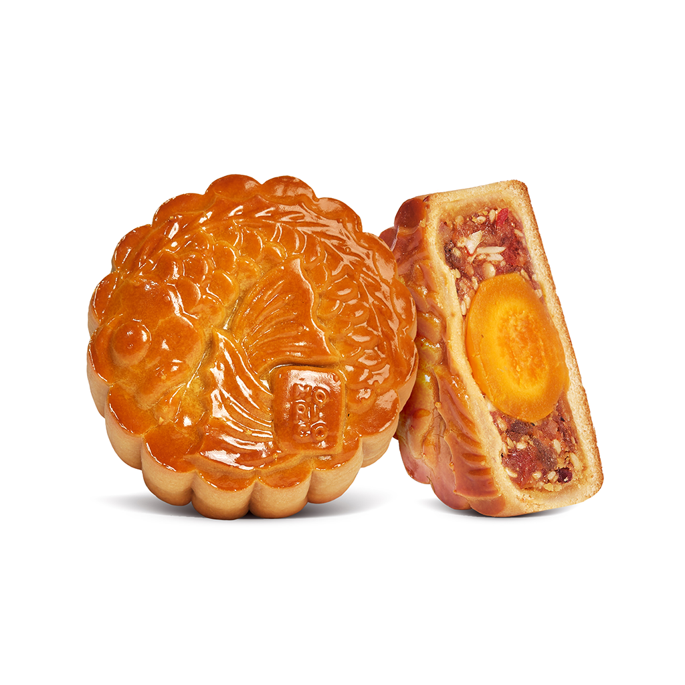
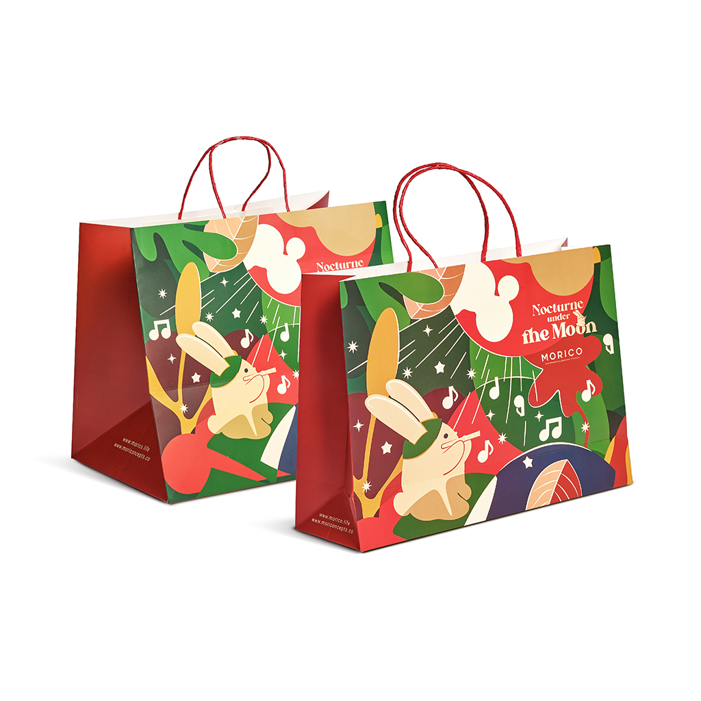
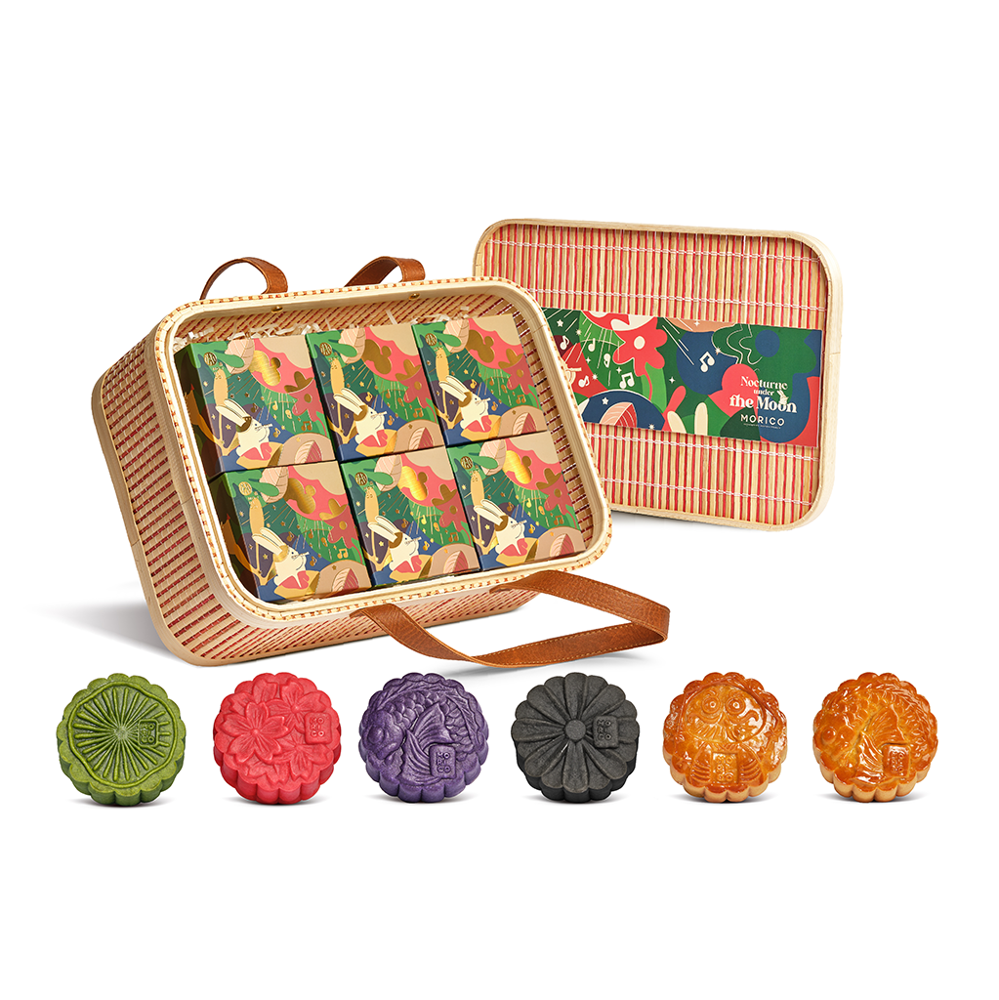
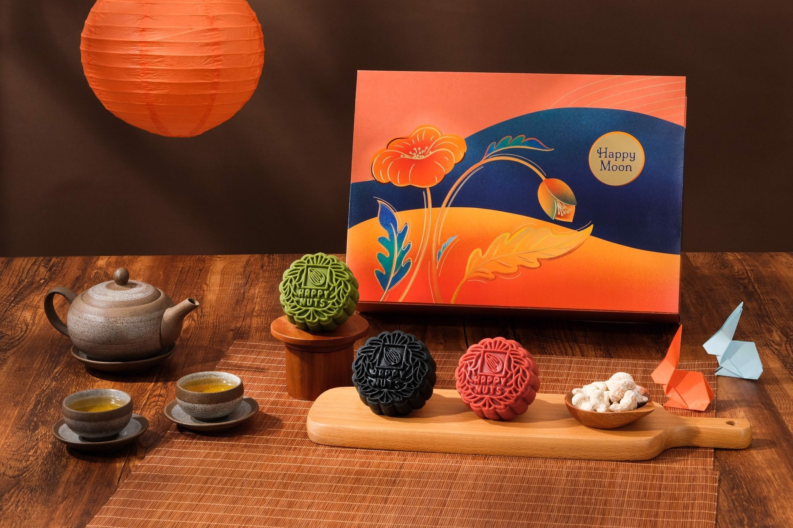

Về Tiệm Bánh Morico
“Morico – Hương vị truyền thống, phong cách hiện đại”

Với hơn một thập kỷ gìn giữ hương vị truyền thống, Morico mang đến những chiếc bánh Trung Thu được làm thủ công tinh tế – tươi ngon, an toàn và đậm đà hương vị đặc trưng.
Mỗi chiếc bánh không chỉ là món quà ngọt ngào, mà còn là lời chúc tròn đầy, ấm áp gửi đến người thân yêu trong mùa trăng sum họp.
Trọn Vẹn Vị Yêu Thương

Bánh Trung Thu Morico là biểu tượng của sự giao thoa tinh tế giữa truyền thống ẩm thực Việt Nam và phong cách hiện đại, mang đến trải nghiệm thưởng thức trọn vẹn, đầy ý nghĩa cho mọi gia đình trong mùa trăng rằm. Morico không chỉ là một sản phẩm bánh, mà còn là món quà tinh thần, thể hiện sự quan tâm, gắn kết và sẻ chia yêu thương giữa con người với con người.
Tinh Xảo Trong Từng Chi Tiết

Dòng bánh truyền thống của Morico mang đậm bản sắc văn hóa Việt Nam, là kết tinh của những giá trị lâu đời, đồng thời được hoàn thiện để phù hợp với gu thưởng thức hiện đại. Sự tinh xảo trong từng chi tiết, từ hình dáng bánh đến họa tiết in nổi, màu sắc hài hòa, tạo nên những sản phẩm vừa bắt mắt vừa đậm chất nghệ thuật.
Cam Kết Về Chất Lượng và Ý Nghĩa

Morico luôn đặt chất lượng và sự hoàn thiện lên hàng đầu. Quy trình sản xuất hiện đại, khép kín, được kiểm soát nghiêm ngặt, đảm bảo từng chiếc bánh đạt chuẩn về hình thức, hương vị và trải nghiệm người dùng. Sự kết hợp giữa truyền thống và hiện đại trong từng sản phẩm không chỉ giữ gìn giá trị văn hóa của bánh Trung Thu mà còn mang đến những trải nghiệm thưởng thức tinh tế.
Bên cạnh giá trị về hương vị, bánh Trung Thu Morico còn là biểu tượng của sự quan tâm và kết nối. Trong mỗi chiếc bánh, Morico gửi gắm thông điệp về tình thân, sự tinh tế và niềm hạnh phúc khi được sẻ chia những khoảnh khắc sum vầy. Mỗi mùa Trung Thu, Morico là người bạn đồng hành mang đến niềm vui, sự trọn vẹn và những ký ức khó quên cho mọi người.
Với Morico, bánh Trung Thu không chỉ là món quà, mà còn là trải nghiệm tinh thần, là sự kết nối giữa quá khứ và hiện tại, giữa truyền thống và hiện đại.